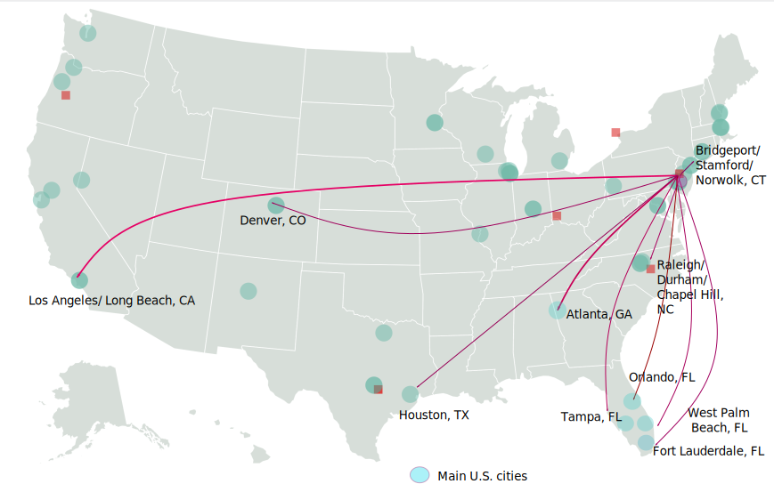
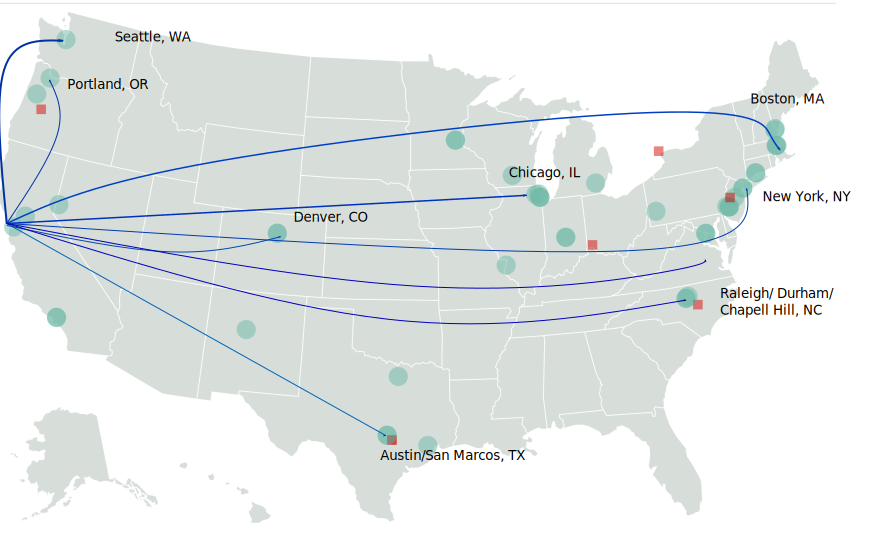
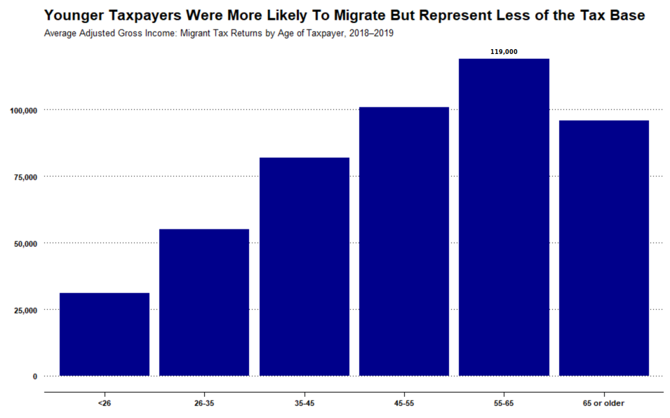
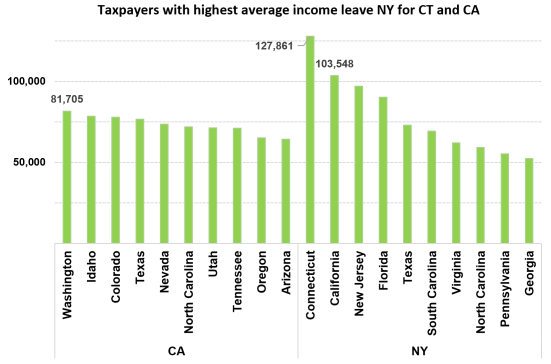
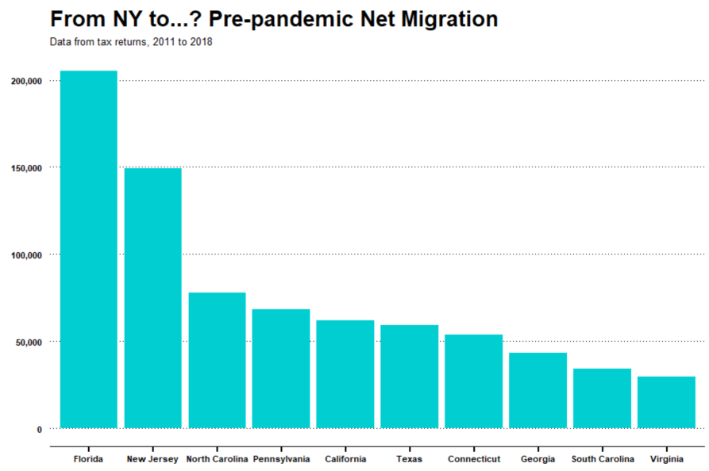
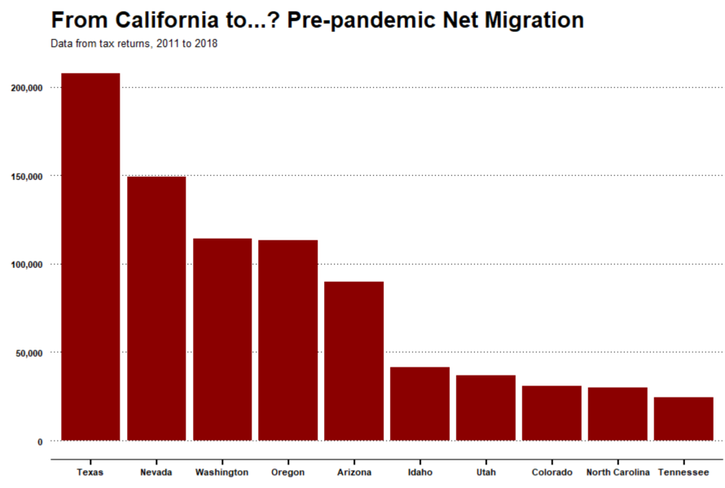
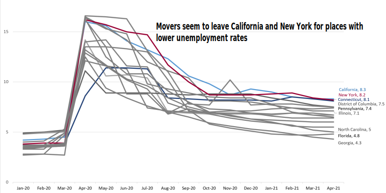

What We Actually Know About How Americans Are Moving During Covid
America's largest, densest, most expensive cities — namely, San Francisco and Manhattan — experienced some changes in people’s migration. We hear stories about people living cities and changing their living preferences, but we might not still have enough evidence to prove it. The question is where are these people going and why? Were they looking to avoid big rents? densely populated cities? high taxes? bad weather? We still do not have enough information, but here is what we know...
During the Pandemic
People from New York are moving to...
People from San Francisco are moving to...


Source: United Van Lines. Note: Numbers are interest in moving, which is the number of people requesting a quote to move out of a specific location
Pre-pandemic trends
During the previous period taxpayers under the age of 35 were more likely to move than older taxpayers. However, taxpayers within the two youngest age groups, under 26 and under-35, accounted for less than a third of all returns (28.4 percent), but half of all migrant tax returns (52.9 percent) taxpayers in the 26-under-35 age bracket comprising the largest share of migrant returns (33.5 percent).


Source: Internal Revenue Service Statistics.


Source: Bloomberg based on Internal Revenue Service Statistics.

Source: Bureau of Labor Statistics.